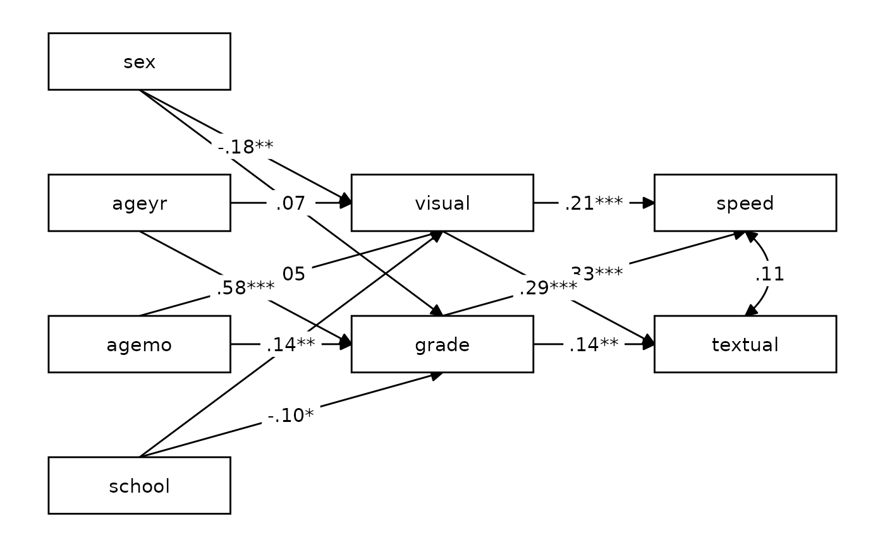

Make a quick and decent-looking tidySEM plot.
Usage
nice_tidySEM(
fit,
layout = NULL,
hide_nonsig_edges = FALSE,
hide_var = TRUE,
hide_cov = FALSE,
hide_mean = TRUE,
est_std = TRUE,
label,
label_location = NULL,
reduce_items = NULL,
plot = TRUE,
...
)Arguments
- fit
SEM or CFA model fit to plot.
- layout
A matrix (or data.frame) that describes the structure; see tidySEM::get_layout. If a named list is provided, with names "IV" (independent variables), "M" (mediator), and "DV" (dependent variables),
nice_tidySEMattempts to write the layout matrix automatically.- hide_nonsig_edges
Logical, hides non-significant edges. Defaults to FALSE.
- hide_var
Logical, hides variances. Defaults to TRUE.
- hide_cov
Logical, hides co-variances. Defaults to FALSE.
- hide_mean
Logical, hides means/node labels. Defaults to TRUE.
- est_std
Logical, whether to use the standardized coefficients. Defaults to TRUE.
- label
Labels to be used on the plot. As elsewhere in
lavaanExtra, it is provided as a named list with format(colname = "label").- label_location
Location of label along the path, as a percentage (defaults to middle, 0.5).
- reduce_items
A numeric vector of length 1 (x) or 2 (x & y) defining how much space to trim from the nodes (boxes) of the items defining the latent variables. Can be provided either as
reduce_items = 0.4(will only affect horizontal space, x), orreduce_items = c(x = 0.4, y = 0.2)(will affect both horizontal x and vertical y).- plot
Logical, whether to plot the result (default). If
FALSE, returns thetidy_semobject, which can be further edited as needed.- ...
Arguments to be passed to tidySEM::prepare_graph.
Examples
# Calculate scale averages
library(lavaan)
data <- HolzingerSwineford1939
data$visual <- rowMeans(data[paste0("x", 1:3)])
data$textual <- rowMeans(data[paste0("x", 4:6)])
data$speed <- rowMeans(data[paste0("x", 7:9)])
# Define our variables
IV <- c("sex", "ageyr", "agemo", "school")
M <- c("visual", "grade")
DV <- c("speed", "textual")
# Define our lavaan lists
mediation <- list(speed = M, textual = M, visual = IV, grade = IV)
# Define indirect object
structure <- list(IV = IV, M = M, DV = DV)
# Write the model, and check it
model <- write_lavaan(mediation, indirect = structure, label = TRUE)
cat(model)
#> ##################################################
#> # [-----------Mediations (named paths)-----------]
#>
#> speed ~ visual_speed*visual + grade_speed*grade
#> textual ~ visual_textual*visual + grade_textual*grade
#> visual ~ sex_visual*sex + ageyr_visual*ageyr + agemo_visual*agemo + school_visual*school
#> grade ~ sex_grade*sex + ageyr_grade*ageyr + agemo_grade*agemo + school_grade*school
#>
#> ##################################################
#> # [--------Mediations (indirect effects)---------]
#>
#> sex_visual_speed := sex_visual * visual_speed
#> sex_visual_textual := sex_visual * visual_textual
#> ageyr_visual_speed := ageyr_visual * visual_speed
#> ageyr_visual_textual := ageyr_visual * visual_textual
#> agemo_visual_speed := agemo_visual * visual_speed
#> agemo_visual_textual := agemo_visual * visual_textual
#> school_visual_speed := school_visual * visual_speed
#> school_visual_textual := school_visual * visual_textual
#> sex_grade_speed := sex_grade * grade_speed
#> sex_grade_textual := sex_grade * grade_textual
#> ageyr_grade_speed := ageyr_grade * grade_speed
#> ageyr_grade_textual := ageyr_grade * grade_textual
#> agemo_grade_speed := agemo_grade * grade_speed
#> agemo_grade_textual := agemo_grade * grade_textual
#> school_grade_speed := school_grade * grade_speed
#> school_grade_textual := school_grade * grade_textual
#>
# Fit model
fit <- sem(model, data)
# Plot model
# \donttest{
nice_tidySEM(fit, layout = structure)

# }